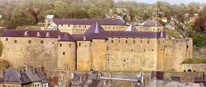
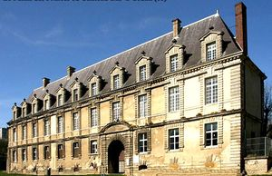
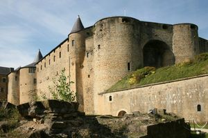
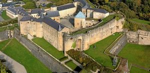

Recensement Jean-Claude Truffet
| Département | 08 — Ardennes |
| Canton | Sedan |
| Commune | Sedan |
| Type d'édifice | Forteresse |
| Période d'origine | XV-XVI |
| Coordonnées GPS | 49° 42' 6,8" Nord, 4° 56' 53,39" Est |




Trois édifice dans cet article Sedan Bas , le Fort et Dijonval. Château BAS de SEDAN, le site du château était occupé au XVIe siècle par un quartier dit "du moulin", entouré d'une fortification, et surplombé par une haute terrasse destinée aux pièces d'artilleries. La construction du château bas, au début du XVIIe siècle, détruit ce quartier dont il ne subsiste plus qu'une maison. A cette époque, est élevé un bastion de Turenne qui englobe le fer à cheval et se termine par l'imposante traverse qui clôt la cour à l'arrière du château. Le bastion a été détruit à la fin du XIXe siècle. Éléments protégés MH : les façades et les toitures du bâtiment du XVIIe siècle, dit "Château-Bas", à l'exclusion de toutes dispositions intérieures : classement par arrêté du 22 décembre 1952. Les constructions situées dans la cour du "Château-Bas" : maison du XVIe siècle; corps de garde ; magasin ; grande traverse ; mur fermant la cour au nord-ouest : inscription par arrêté du 26 mars 2003. DIJONVAL Lors de la création, en 1646, de la manufacture royale du Dijonval, Sedan, nouvellement rattachée à la France, devint le premier centre de fabrication de draps fins "procédé façon de Hollande". Le Dijonval fut pendant plus de 300 ans un lieu de travail industriel où se succédèrent des milliers d'hommes et de femmes qui ont fait la grandeur et la renommée du textile sedanais. Les bâtiments subsistants encore aujourd'hui, qui évoquent plus un palais qu'une usine, sont un superbe exemple de l'architecture du XVIIIe siècle. Seule la façade et la cour intérieure peuvent être visibles.
FORT DE SEDAN, c'est en 1424 à l'occasion du rachat de la seigneurie de Sedan à Guillaume de Braquemont, son beau-frère, qu'Evrard de la Marck a fait construire un premier château qui englobait un prieuré. Ce château triangulaire fut très largement agrandi et renforcé par les descendants d'Evrard, huit princes et une princesse firent du château-fort, "le Géant de Sedan : le plus grand château-fort d'Europe avec 35000 m² de superficie". Pour faire face aux exigences imposées par le développement de l'artillerie Robert II de la Marck engage, en 1500, une nouvelle campagne de travaux, avec remparement, terrassement, et renforcement des murailles. Construction de quatre bastions polygonaux qui vont faire de Sedan, en 1550, une forteresse plus redoutable que jamais. Entreprise sous Robert IV de la Marck et achevée sous Henri Robert de la Marck, cette dernière étape fut importante dans l'histoire du château. La dernière descendante des de La Marck, Charlotte, épouse Henri de la Tour d'Auvergne en 1591. Elle meurt très jeune en laissant son château et ses titres à son époux Henri de la Tour d'Auvergne épousera Elisabeth de Nassau en seconde noce. De cette union naquit Turenne en 1611. Son frère aîné, Frédéric Maurice de la Tour d'Auvergne, suite au complot du 5 Mars, 1642, Racheté par la couronne et donne le château et la principauté de Sedan à Louis XIII pour sauver sa tête. Le château-fort restera domaine militaire pendant plus de trois siècles. Le château avec ses quatre bastions devient la propriété de Sedan est classé MH par arrêté du 4 janvier 1965.
C'est aujourd'hui le plus grand château-fort d'Europe du Moyen-Age. Gigantesque, montant sur sept niveaux, le bâtiment est toujours impressionnant. Éléments protégés MH : le château en totalité, y compris ses quatre bastions : classement par arrêté du 4 janvier 1965.
Henri Robert de la Marck"
Trois édifice dans cet article Sedan Bas , le Fort et Dijonval grav 3 Château bas grav-2 GPS : 49° 42' 6,8" Nord, 4° 56' 53,39" Est
Fort de sedan grav-4-5 GPS : 49° 42' 07" Nord, 4° 56' 58" Est